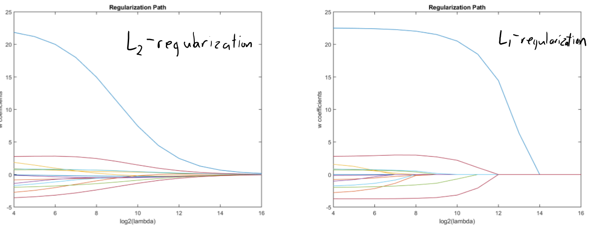
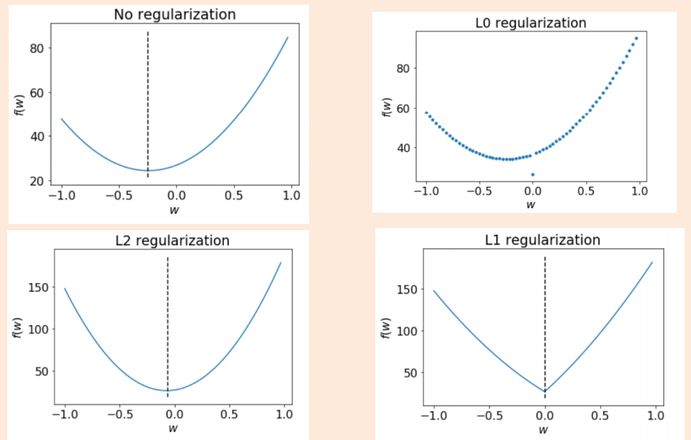

DSCI 573: Feature and Model Selection#
Lecture 7: Regularization#
UBC Master of Data Science program, 2020-21
Instructor: Varada Kolhatkar
import os
%matplotlib inline
import string
from collections import deque
import matplotlib.pyplot as plt
import numpy as np
import numpy.random as npr
import pandas as pd
# data
from sklearn import datasets
from sklearn.compose import ColumnTransformer, make_column_transformer
from sklearn.dummy import DummyClassifier, DummyRegressor
from sklearn.ensemble import RandomForestClassifier, RandomForestRegressor
from sklearn.feature_extraction.text import CountVectorizer
# Feature selection
from sklearn.feature_selection import RFE, RFECV, SelectFromModel
from sklearn.impute import SimpleImputer
# classifiers / models
from sklearn.linear_model import (
Lasso,
LassoCV,
LinearRegression,
LogisticRegression,
Ridge,
RidgeCV,
)
# other
from sklearn.metrics import accuracy_score, log_loss, make_scorer, mean_squared_error
from sklearn.model_selection import (
GridSearchCV,
RandomizedSearchCV,
ShuffleSplit,
cross_val_score,
cross_validate,
train_test_split,
)
from sklearn.pipeline import Pipeline, make_pipeline
from sklearn.preprocessing import (
OneHotEncoder,
OrdinalEncoder,
PolynomialFeatures,
StandardScaler,
)
from sklearn.svm import SVC, SVR
from sklearn.tree import DecisionTreeClassifier
pd.set_option("display.max_colwidth", 200)
Learning outcomes#
From this lecture, students are expected to be able to:
Explain the general idea of L2 regularization.
Explain the relation between the size of regression weights and overfitting.
Use L2 regularization (Ridge) using
sklearn.Explain the general idea of L1-regularization.
Use L1-regularization (Lasso) using
sklearn.Discuss sparsity in L1-regularization.
Compare L0-, L1-, and L2-regularization.
Use L1 regularization for feature selection.
Explain the importance of scaling when using L1- and L2-regularization
Briefly explain how L1 and L2 regularization behave in the presence of collinear features.
1. Motivation#
Video 1
Complex models and the fundamental tradeoff#
We’ve said that complex models tend to overfit more.
Recall: polynomial degree and train vs. validation scores.
Let’s generate some synthetic data
n = 20
X_train = np.linspace(-3, 3, n)
y_train = X_train ** 3 + npr.randn(n) * 3
n = 20
X_valid = np.linspace(-3, 3, n)
y_valid = X_valid ** 3 + npr.randn(n) * 3
# transforming the data to include another axis
X_train = X_train[:, np.newaxis]
y_train = y_train[:, np.newaxis]
X_valid = X_valid[:, np.newaxis]
y_valid = y_valid[:, np.newaxis]
plt.scatter(X_train, y_train, color="blue")
<matplotlib.collections.PathCollection at 0x7fea2acad2e0>
Let’s fit polynomials of different degrees on the synthetic data.
def plot_train_poly_deg():
plt.figure(figsize=(16, 8))
count = 1
degrees = [0, 1, 2, 3, 10, 15, 16, 18]
for deg in degrees: # needs scikit-learn-0.20
pipe_poly_lr = make_pipeline(PolynomialFeatures(degree=deg), LinearRegression())
plt.subplot(2, 4, count)
pipe_poly_lr.fit(X_train, y_train)
plt.scatter(X_train, y_train, color="blue")
plt.plot(X_train, pipe_poly_lr.predict(X_train), color="green", linewidth=3)
plt.title(
"p = %s, train = %0.3f" % (str(deg), pipe_poly_lr.score(X_train, y_train))
)
count += 1
plot_train_poly_deg()
The training score goes up as we increase the degree of the polynomial, and is highest for \(p = 18\).
How good are these models on the validation set?
The validation score is highest for \(p = 3\), and it goes down as we increase the degree after that; we start overfitting after \(p=3\).
def plot_valid_poly_deg():
plt.figure(figsize=(16, 8))
count = 1
degrees = [0, 1, 2, 3, 10, 15, 16, 18]
for deg in degrees: # needs scikit-learn-0.20
pipe_poly_lr = make_pipeline(PolynomialFeatures(degree=deg), LinearRegression())
plt.subplot(2, 4, count)
pipe_poly_lr.fit(X_train, y_train)
plt.scatter(X_valid, y_valid, color="blue")
plt.plot(X_train, pipe_poly_lr.predict(X_train), color="green", linewidth=3)
count += 1
plt.title(
"p = %s, valid = %0.3f" % (str(deg), pipe_poly_lr.score(X_valid, y_valid))
)
plot_valid_poly_deg()
So there is a tradeoff between complexity of models and the validation score.
But what if we need complex models?
In supervised ML we try to find the mapping between \(X\) and \(y\), and usually the “true” mapping from \(X\) to \(y\) is complex.
Might need high-degree polynomial.
Might need to use many features, and don’t know “relevant” ones.
Controlling model complexity#
Two methods to control complexity:
Model averaging: average over multiple models to decrease variance (e.g., random forests).

Regularization: add a penalty on the complexity of the model
This lecture!
Idea of regularization: Pick the line/hyperplane with smaller slope#

Assuming red and green models have the same training score and if you are forced to choose one of them, which one would you pick?
Pick green because its slope is smaller.
Why pick the line/hyperplane with smaller slope?#
Small change in \(x_i\) has a smaller change in prediction \(y_i\)
Green line’s predictions are less sensitive to the training data.
Since green \(w\) is less sensitive to training data, validation error might be lower.
In this lecture we are going to explore methods to make \(w\) less sensitive to the data.
Regularization: L0 penalty you have seen before#
Least squares loss before applying penalty:
\(\lVert{Xw -y}\rVert^2_2 \rightarrow\) square of the L2 norm \(Xw -y\)
Regularization: L0 penalty you have seen before#
Least squares loss after applying L0 penalty:
\(\lVert{Xw -y}\rVert^2_2 \rightarrow\) square of the L2 norm \(Xw -y\)
\(\lambda \rightarrow\) penalty parameter
\(\lVert w\rVert_0 \rightarrow\) L0 norm of \(w\)
The number of non-zero values in \(w\).
Reminder: L0, L1, and L2 norms#
Terminology and notation: L0, L1, and L2 norms#
L0 “norm” \(\lVert w \rVert \rightarrow\) the number of non-zero elements in \(w\)
L1 norm \(\lVert w \rVert_1 = \lvert w_1 \rvert + \lvert w_2 \rvert + \dots + \lvert w_n \rvert\)
L2 norm \(\lVert w \rVert_2 = (w_1^2 + w_2^2 + \dots + w_n^2)^{1/2}\)
from numpy import array
from numpy.linalg import norm
w = array([0, 2, 4])
l0 = norm(w, 0) # number of non-zero values
l1 = norm(w, 1) # sum of absolute values
l2 = norm(w, 2) # square root of sum of the squared values
print("The l0 norm of %s is: %0.3f" % (w, l0))
print("The l1 norm of %s is: %0.3f" % (w, l1))
print("The l2 norm of %s is: %0.3f" % (w, l2))
The l0 norm of [0 2 4] is: 2.000
The l1 norm of [0 2 4] is: 6.000
The l2 norm of [0 2 4] is: 4.472
# norms of a vector
from numpy import array
from numpy.linalg import norm
w = array([1, -2, 3, 0])
# l0 norm is the number of non-zero values in a vector
print("The l0 norm of %s is: %0.3f" % (w, norm(w, 0)))
# l1 norm is the sum of the absolute values in a vector.
print("The l1 norm of %s is: %0.3f" % (w, norm(w, 1)))
# l2 norm is square root of the sum of the squared values in a vector.
print("The l2 norm of %s is: %0.3f" % (w, norm(w, 2)))
The l0 norm of [ 1 -2 3 0] is: 3.000
The l1 norm of [ 1 -2 3 0] is: 6.000
The l2 norm of [ 1 -2 3 0] is: 3.742
2. L2 regularization#
Video 2
L2 penalty#
Standard regularization strategy is L2 regularization
We incorporate L2 penalty in the loss function \(f(w)\): $\(f(w) = \frac{1}{2}\sum_i^n(w^TX_i - y_i)^2 + \frac{\lambda}{2}\sum_j^d w_j^2 \text{ or }\)\( \)\(f(w) = \frac{1}{2}\lVert Xw - y\rVert_2^2 + \frac{\lambda}{2} \lVert w\rVert_2^2\)$
\(\lVert Xw - y\rVert_2^2 \rightarrow\) square of the \(L2\) norm of \(Xw -y\)
\(\lambda \rightarrow\) regularization strength
\(\lVert w\rVert_2^2 \rightarrow\) square of the L2 norm of \(w\)
sum of the squared weight values.
L2 regularization#
Objective balances getting low error vs. having small slopes \(w_j\)
In terms of fundamental trade-off:
You can increase the training error.
Nearly-always reduces overfitting and the validation error.
Have we seen this before?#
Ridge: Linear Regression with L2 regularization
class sklearn.linear_model.Ridge(alpha=1.0, fit_intercept=True, normalize=False, copy_X=True, max_iter=None, tol=0.001, solver=’auto’, random_state=None)
Linear least squares with l2 regularization. Minimizes the objective function: ||y - Xw||^2_2 + alpha * ||w||^2_2 This model solves a regression model where the loss function is the linear least squares function and regularization is given by the l2-norm. Also known as Ridge Regression or Tikhonov regularization.
Uses the hyperparameter \(\alpha\) for regularization strength instead of \(\lambda\); larger value of \(\alpha\) means more regularization. $\(f(w) = \lVert Xw - y\rVert_2^2 + \alpha \lVert w\rVert_2^2\)$
LogisticRegression: Logistic Regression with L2 regularization
class sklearn.linear_model.LogisticRegression(penalty=’l2’, *, dual=False, tol=0.0001, C=1.0, fit_intercept=True, intercept_scaling=1, class_weight=None, random_state=None, solver=’lbfgs’, max_iter=100, multi_class=’auto’, verbose=0, warm_start=False, n_jobs=None, l1_ratio=None)
C: default=1.0 Inverse of regularization strength; must be a positive float. Like in support vector machines, smaller values specify stronger regularization.
Size of regression weights and overfitting#
Bigger values of weights means the model is very sensitive to the training data.
Let’s use Ridge with no regularization on polynomials with different degrees.
alpha = 0
degrees = [1, 2, 4, 6, 15, 20]
data = {}
for deg in degrees:
pipe_poly_ridge = make_pipeline(
PolynomialFeatures(degree=deg, include_bias=False), Ridge(alpha=alpha)
)
pipe_poly_ridge.fit(X_train, y_train)
data.setdefault("degree", []).append(str(deg))
data.setdefault("train_score", []).append(
str(round(pipe_poly_ridge.score(X_train, y_train), 3))
)
data.setdefault("valid_score", []).append(
str(round(pipe_poly_ridge.score(X_valid, y_valid), 3))
)
data.setdefault("weights", []).append(
[round(i, 3) for i in list(pipe_poly_ridge.named_steps["ridge"].coef_[0])]
)
/Users/kvarada/opt/miniconda3/envs/571/lib/python3.8/site-packages/sklearn/linear_model/_ridge.py:147: LinAlgWarning: Ill-conditioned matrix (rcond=3.65967e-18): result may not be accurate.
return linalg.solve(A, Xy, sym_pos=True,
pd.DataFrame(data)
| degree | train_score | valid_score | weights | |
|---|---|---|---|---|
| 0 | 1 | 0.796 | 0.77 | [5.743] |
| 1 | 2 | 0.826 | 0.731 | [5.743, 0.688] |
| 2 | 4 | 0.977 | 0.872 | [0.069, 1.806, 0.954, -0.132] |
| 3 | 6 | 0.977 | 0.871 | [-0.235, 1.737, 1.099, -0.111, -0.013, -0.002] |
| 4 | 15 | 0.988 | 0.877 | [2.65, -3.544, -23.958, 4.97, 42.755, -1.932, -28.846, 0.378, 9.49, -0.043, -1.621, 0.003, 0.138, -0.0, -0.005] |
| 5 | 20 | 1.0 | 0.85 | [9.922, -55.976, -114.727, 542.503, 351.067, -1679.367, -478.091, 2333.862, 347.236, -1705.769, -144.523, 708.765, 35.294, -172.262, -4.966, 24.104, 0.371, -1.79, -0.011, 0.054] |
When we fit a higher degree polynomial, some weights are large.
So for higher degree polynomials, the model would be very sensitive to the data.
Size of regression weights and overfitting#
The idea of regularization is to “regularize” weights so that they are small and so less sensitive to the data.
Let’s try adding regularization with a bigger value of
alpha.
alpha = 100
degrees = [1, 2, 4, 6, 15, 20]
data = {}
for deg in degrees:
pipe_poly_ridge = make_pipeline(
PolynomialFeatures(degree=deg, include_bias=False), Ridge(alpha=alpha)
)
pipe_poly_ridge.fit(X_train, y_train)
data.setdefault("degree", []).append(str(deg))
data.setdefault("train_score", []).append(
str(round(pipe_poly_ridge.score(X_train, y_train), 3))
)
data.setdefault("valid_score", []).append(
str(round(pipe_poly_ridge.score(X_valid, y_valid), 3))
)
data.setdefault("weights", []).append(
[round(i, 3) for i in list(pipe_poly_ridge.named_steps["ridge"].coef_[0])]
)
/Users/kvarada/opt/miniconda3/envs/571/lib/python3.8/site-packages/sklearn/linear_model/_ridge.py:147: LinAlgWarning: Ill-conditioned matrix (rcond=2.55354e-18): result may not be accurate.
return linalg.solve(A, Xy, sym_pos=True,
pd.DataFrame(data)
| degree | train_score | valid_score | weights | |
|---|---|---|---|---|
| 0 | 1 | 0.508 | 0.467 | [2.29] |
| 1 | 2 | 0.534 | 0.448 | [2.29, 0.437] |
| 2 | 4 | 0.964 | 0.879 | [0.124, 0.222, 0.913, 0.04] |
| 3 | 6 | 0.966 | 0.87 | [0.183, 0.114, 0.534, 0.265, 0.05, -0.025] |
| 4 | 15 | 0.977 | 0.875 | [0.058, 0.032, 0.097, 0.069, 0.119, 0.106, 0.086, 0.089, -0.016, -0.048, -0.0, 0.007, 0.0, -0.0, -0.0] |
| 5 | 20 | 0.979 | 0.87 | [0.05, 0.013, 0.087, 0.024, 0.115, 0.031, 0.109, 0.036, 0.04, 0.036, -0.05, 0.02, 0.015, -0.025, -0.002, 0.007, 0.0, -0.001, -0.0, 0.0] |
If we “regularize” the weights for a complex model e.g., \(p = 20\) the weights are small
It means that we are less sensitive to the data.
Why are small weights better?#
Suppose \(x_1\) and \(x_2\) are nearby each other.
We might expect that they have similar \(\hat{y}\).
If we change feature1 value by a small amount \(\epsilon\) in \(x_2\), leaving everything else the same, we might think that the prediction would be the same.
But if we have bigger weights small change in \(x_2\) has a large effect on the prediction.
x_1 = np.array([1, 1, 0, 1, 1, 0])
x_2 = np.array([0.8, 1, 0, 1, 1, 0])
weights = np.array([100, 0.1, 1, 0.22, 4, 3])
print("x_1 prediction: ", x_1.dot(weights))
print("x_2 prediction: ", x_2.dot(weights))
x_1 prediction: 104.32
x_2 prediction: 84.32
Why are small weights better?#
In linear models, the rate of change of the prediction function is proportional to the individual weights.
So if we want the function to change slowly, we want to ensure that the weights stay small.
The idea is to avoid putting all our energy into one features, which might give us over-confident predictions and lead to overfitting.
How alpha affects the weights#
Let’s try different values of alpha and look at the weights.
deg = 10
alphas = 10.0 ** np.arange(-4, 4)
data = {}
for alpha in alphas:
pipe_poly_ridge = make_pipeline(
PolynomialFeatures(degree=deg, include_bias=False), Ridge(alpha=alpha)
)
pipe_poly_ridge.fit(X_train, y_train)
data.setdefault("alpha", []).append(str(alpha))
data.setdefault("train_score", []).append(
str(round(pipe_poly_ridge.score(X_train, y_train), 3))
)
data.setdefault("valid_score", []).append(
str(round(pipe_poly_ridge.score(X_valid, y_valid), 3))
)
data.setdefault("weights", []).append(
[round(i, 3) for i in list(pipe_poly_ridge.named_steps["ridge"].coef_[0])]
)
pd.DataFrame(data)
| alpha | train_score | valid_score | weights | |
|---|---|---|---|---|
| 0 | 0.0001 | 0.98 | 0.873 | [-0.722, -2.847, 1.487, 3.789, -0.069, -1.175, -0.003, 0.145, 0.001, -0.006] |
| 1 | 0.001 | 0.98 | 0.873 | [-0.719, -2.824, 1.483, 3.77, -0.067, -1.169, -0.003, 0.144, 0.001, -0.006] |
| 2 | 0.01 | 0.98 | 0.873 | [-0.689, -2.608, 1.444, 3.589, -0.053, -1.115, -0.005, 0.137, 0.001, -0.006] |
| 3 | 0.1 | 0.98 | 0.873 | [-0.47, -1.353, 1.161, 2.529, 0.053, -0.792, -0.02, 0.097, 0.001, -0.004] |
| 4 | 1.0 | 0.979 | 0.874 | [-0.007, 0.205, 0.539, 1.07, 0.288, -0.323, -0.054, 0.036, 0.003, -0.001] |
| 5 | 10.0 | 0.977 | 0.875 | [0.11, 0.248, 0.285, 0.399, 0.382, -0.011, -0.066, -0.012, 0.004, 0.001] |
| 6 | 100.0 | 0.974 | 0.872 | [0.076, 0.06, 0.182, 0.122, 0.309, 0.127, -0.039, -0.032, 0.002, 0.002] |
| 7 | 1000.0 | 0.957 | 0.855 | [0.022, 0.015, 0.053, 0.042, 0.1, 0.073, 0.027, -0.014, -0.003, 0.001] |
We also observe the fundamental tradeoff.
As we increase
alphathe weights become smaller and smaller.We see that the rounded values of some weights are close to zero.
L2-Regularization “Shrinking” Example#

We get least squares with \(\lambda = 0\).
But we can achieve similar training error with smaller \(\lVert w\rVert^2\).
\(\lVert Xw - y\rVert^2\) increases with \(\lambda\), and \(\lVert w\rVert^2\) decreases with λ.
Though individual \(w_j\) can increase or decrease with lambda because we use the L2-norm, the large ones decrease the most.
alpha values and fit of the model#
Let’s examine the effect of different alpha values on the fit of a polynomial with degree 10.
def plot_alpha_train_score():
plt.figure(figsize=(16, 8))
count = 1
alphas = 10.0 ** np.arange(-4, 4)
degree = 10
for alpha in alphas: # needs scikit-learn-0.20
pipe_poly_lr = make_pipeline(PolynomialFeatures(degree=deg), Ridge(alpha=alpha))
plt.subplot(2, 4, count)
pipe_poly_lr.fit(X_train, y_train)
preds = pipe_poly_lr.predict(X_train)
plt.scatter(X_train, y_train, color="blue")
plt.plot(X_train, preds, color="green", linewidth=3)
plt.title(
"alpha = %s, train = %0.3f"
% (str(alpha), pipe_poly_lr.score(X_train, y_train))
)
count += 1
plot_alpha_train_score()
Strong regularization means we our complex model becomes smoother.
The weights become smaller but never become zero#
deg = 10
pipe_poly_ridge = make_pipeline(
PolynomialFeatures(degree=deg, include_bias=False), Ridge(alpha=1000)
)
pipe_poly_ridge.fit(X_train, y_train)
threshold = 1e-6
coeffs = pipe_poly_ridge.named_steps["ridge"].coef_
normalized_weights = np.abs(coeffs[0]) / np.max(np.abs(coeffs[0]))
print("Features with non-zero values: ", np.where(normalized_weights > threshold)[0])
Features with non-zero values: [0 1 2 3 4 5 6 7 8 9]
That said, they won’t have much impact on prediction.
Strong regularization means the results are not too sensitive to the training data.
We are keeping the complexity of the model but making it less sensitive to the feature values!
Regularization path#
Weights shrink and converge to zero as \(\lambda\) grows but they do not become exactly 0.
Imagine that \(w_j = 0.000001\). The penalty for this \(w_j\) is \(0.000000000001\), i.e., a very tiny number. So there is less incentive to decrease the loss. The incentive (slope) is smaller and smaller as we approach 0 and therefore the coefficients do not become exactly 0.
{kind=link}
Question: L0 versus L2 regularization (solution)#
Imagine the following two weight vectors which give the same validation errors. $\(w^1 = \begin{bmatrix}100 \\0\end{bmatrix} w^2 = \begin{bmatrix}99.98 \\0.03\end{bmatrix}\)$
Which one would be chosen by L0 regularization?
\(\lVert w^1\rVert_0 = 1\) and \(\lVert w^2\rVert_0 = 2\). So it will pick \(w^1\)
Which one would be chosen by L2 regularization?
L2 regularizer focuses on decreasing the largest weight smaller.
\(99.98^2 + 0.03^2 = 9996.0013\) < \(100^2 = 10000\)
How to pick \(\lambda\)?#
Theory: as \(n\) grows \(\lambda\) should be in the range \(O(1)\) to \(\sqrt{n}\).
Practice: optimize validation set or cross-validation error.
Almost always decreases the test error.
Should we regularize the y-intercept?#
No!
Why encourage it to be closer to zero? (It could be anywhere.)
You should be allowed to shift function up/down globally.
Yes!
Useful for optimization; It makes the solution unique and it easier to compute \(w\)
Compromise: regularize by a smaller amount than other variables. $\(f(w) = \lVert Xw + w_0 - y\rVert^2 + \frac{\lambda_1}{2}\lVert w\rVert^2 + \frac{\lambda_2}{2}w_0^2\)$
Some properties of L2 regularization#
Solution \(w\) is unique. (We are not going into mathematical details.)
Almost always improves the validation error.
No collinearity issues.
Less sensitive to changes in \(X\).
Gradient descent converges faster (bigger \(\lambda\) means fewer iterations). (You’ll learn about Grafient descent in 572.)
Worst case: just set \(\lambda\) small and get the same performance
Interim summary: L2 regularization#
Change the loss function by adding a continuous penalty on the model complexity.
Best parameter \(\lambda\) almost already leads to improved validation error.
L2-regularized least squares is also called “ridge regression”.
Can be solved as a linear system like least squares.
Some benefits of L2 regularization
Solution is unique.
Less sensitive to data.
Fast.
3. L1 regularization#
Video 3
L1-regularization#
\(\lambda \rightarrow\) regularization strength
\(\lVert w\rVert_1 \rightarrow\) L1 norm of \(w\)
Objective balances getting low error vs. having small values for \(w_j\)
Similarities with L2-regularization#
L1-regularization $\(f(w) = \frac{1}{2}\lVert Xw - y\rVert_2^2 + \frac{\lambda}{2} \lVert w\rVert_1\)$
L2-regularization $\(f(w) = \frac{1}{2}\lVert Xw - y\rVert_2^2 + \frac{\lambda}{2} \lVert w\rVert_2^2\)$
Both shrink weights.
Both result in lower validation error.
Terminology and notation: Ridge and Lasso#
Linear regression model that uses L2 regularization is called Ridge or Tikhonov regularization.
Linear regression model that uses L1 regularization is called Lasso.
class sklearn.linear_model.Lasso(alpha=1.0, fit_intercept=True, normalize=False, precompute=False, copy_X=True, max_iter=1000, tol=0.0001, warm_start=False, positive=False, random_state=None, selection=’cyclic’)
Let’s use
Lassowith different values ofalpha.
deg = 10
alphas = 10.0 ** np.arange(-4, 4)
data = {}
for alpha in alphas:
pipe_poly_lasso = make_pipeline(
PolynomialFeatures(degree=deg, include_bias=False),
Lasso(alpha=alpha, max_iter=1000),
)
pipe_poly_lasso.fit(X_train, y_train)
data.setdefault("alpha", []).append(str(alpha))
data.setdefault("train_score", []).append(
str(round(pipe_poly_lasso.score(X_train, y_train), 3))
)
data.setdefault("valid_score", []).append(
str(round(pipe_poly_lasso.score(X_valid, y_valid), 3))
)
data.setdefault("weights", []).append(
[round(i, 3) for i in list(pipe_poly_lasso.named_steps["lasso"].coef_)]
)
/Users/kvarada/opt/miniconda3/envs/571/lib/python3.8/site-packages/sklearn/linear_model/_coordinate_descent.py:529: ConvergenceWarning: Objective did not converge. You might want to increase the number of iterations. Duality gap: 30.391529929329604, tolerance: 0.27492167016359675
model = cd_fast.enet_coordinate_descent(
/Users/kvarada/opt/miniconda3/envs/571/lib/python3.8/site-packages/sklearn/linear_model/_coordinate_descent.py:529: ConvergenceWarning: Objective did not converge. You might want to increase the number of iterations. Duality gap: 30.41861102626206, tolerance: 0.27492167016359675
model = cd_fast.enet_coordinate_descent(
/Users/kvarada/opt/miniconda3/envs/571/lib/python3.8/site-packages/sklearn/linear_model/_coordinate_descent.py:529: ConvergenceWarning: Objective did not converge. You might want to increase the number of iterations. Duality gap: 30.686729958362754, tolerance: 0.27492167016359675
model = cd_fast.enet_coordinate_descent(
/Users/kvarada/opt/miniconda3/envs/571/lib/python3.8/site-packages/sklearn/linear_model/_coordinate_descent.py:529: ConvergenceWarning: Objective did not converge. You might want to increase the number of iterations. Duality gap: 33.61486675943654, tolerance: 0.27492167016359675
model = cd_fast.enet_coordinate_descent(
/Users/kvarada/opt/miniconda3/envs/571/lib/python3.8/site-packages/sklearn/linear_model/_coordinate_descent.py:529: ConvergenceWarning: Objective did not converge. You might want to increase the number of iterations. Duality gap: 47.74179289107009, tolerance: 0.27492167016359675
model = cd_fast.enet_coordinate_descent(
/Users/kvarada/opt/miniconda3/envs/571/lib/python3.8/site-packages/sklearn/linear_model/_coordinate_descent.py:529: ConvergenceWarning: Objective did not converge. You might want to increase the number of iterations. Duality gap: 24.246535113080938, tolerance: 0.27492167016359675
model = cd_fast.enet_coordinate_descent(
pd.DataFrame(data)
| alpha | train_score | valid_score | weights | |
|---|---|---|---|---|
| 0 | 0.0001 | 0.978 | 0.873 | [-0.428, 1.632, 1.288, -0.019, -0.045, -0.018, -0.001, 0.0, 0.0, 0.0] |
| 1 | 0.001 | 0.978 | 0.873 | [-0.418, 1.623, 1.282, -0.016, -0.044, -0.018, -0.001, 0.0, 0.0, 0.0] |
| 2 | 0.01 | 0.978 | 0.873 | [-0.313, 1.547, 1.218, 0.013, -0.034, -0.022, -0.001, 0.0, 0.0, 0.0] |
| 3 | 0.1 | 0.978 | 0.874 | [-0.0, 1.058, 1.004, 0.159, 0.001, -0.033, -0.002, -0.0, 0.0, 0.0] |
| 4 | 1.0 | 0.972 | 0.867 | [0.0, 0.0, 0.434, 0.288, 0.148, -0.006, -0.008, -0.005, -0.0, 0.0] |
| 5 | 10.0 | 0.951 | 0.853 | [0.0, 0.0, 0.0, 0.0, 0.131, 0.024, 0.019, 0.001, -0.002, -0.0] |
| 6 | 100.0 | 0.922 | 0.85 | [0.0, 0.0, 0.0, 0.0, 0.0, 0.0, 0.041, 0.004, -0.003, -0.0] |
| 7 | 1000.0 | 0.764 | 0.756 | [0.0, 0.0, 0.0, 0.0, 0.0, 0.0, 0.0, 0.0, 0.002, 0.0] |
Smaller
alphavalues have higher weightsLarger
alphavalues results in smaller weights.Many weights become zero.
The weights become smaller and smaller and become zero#
deg = 10
pipe_poly_lasso = make_pipeline(
PolynomialFeatures(degree=deg, include_bias=False), Lasso(alpha=100)
)
pipe_poly_lasso.fit(X_train, y_train)
threshold = 1e-6
coeffs = pipe_poly_lasso.named_steps["lasso"].coef_
normalized_weights = np.abs(coeffs) / np.max(np.abs(coeffs))
print("Features with non-zero values: ", np.where(normalized_weights > threshold)[0])
Features with non-zero values: [6 7 8 9]
It has assigned zero weight to many features!!
Sparsity!
Terminology and notation: Sparsity#
We say a linear function is sparse if most of the coefficients are zero.
Example: Here only 2 out of 8 coefficients are non-zero and so it is a sparse function. $\(0x_1 + 0.45 x_2 + 0 x_3 + 0x_4 + 1.2x_5 + 0x_6 + 0x_7 + 0x_8\)$
Similarities between L1- and L0-regularization#
Like L0-norm, it encourages elements of \(w\) to be exactly zero.
L1-regularization simultaneously regularizes and selects features.
Very fast alternative to search and score (L0 penalty).
With L0 penalty, we had to
L1-regularization $\(f(w) = \frac{1}{2}\lVert Xw - y\rVert_2^2 + \frac{\lambda}{2} \lVert w\rVert_1\)$
L0-regularization $\(f(w) = \frac{1}{2}\lVert Xw - y\rVert_2^2 + \frac{\lambda}{2} \lVert w\rVert_0\)$
Example: L0 vs. L1 vs. L2#
Consider problem where 3 vectors can get minimum training error:
Without regularization, we could choose any of these 3.
They all have same error, so regularization will “break tie”.
Which one would you choose with each of L0, L1, L2 regularization?
Which one would you choose with L0 regularization?#
With L0 regularization, you would choose \(w^2\)
\(\lVert w^1\rVert_0 = 2\)
\(\lVert w^2\rVert_0 = 1\)
\(\lVert w^3\rVert_0 = 2\)
Which one would you choose with L1 regularization?#
With L1 regularization, you would choose \(w^2\).
\(\lVert w^1\rVert_1 = 100.02\)
\(\lVert w^2\rVert_1 = 100\)
\(\lVert w^3\rVert_1 = 100.01\)
L1-regularization focuses on decreasing all \(w_j\) until they are 0.
Which one would you choose with L2 regularization?#
With L1 regularization, you would choose \(w^3\).
\(\lVert w^1\rVert_2^2 = (100)^2 + (0.02)^2 = 10000.0004\)
\(\lVert w^2\rVert_2^2 = (100)^2 = 10000\)
\(\lVert w^3\rVert_2^2 = (99.99)^2 + (0.02)^2 = 9998.0005\)
L2-regularization focuses on decreasing largest \(w_j\) smaller
(Optional) Sparsity and Regularization#
{kind=link}
(optional) Sparsity and Regularization (with d=1)#
{kind=link}
Some properties of L1 regularization#
Almost always improves the validation error.
Can learn with exponential number of irrelevant features.
Less sensitive to changes in \(X\).
The solution is not unique. (If interested in more explanation on this, see slide 43 in this slide deck.)
L1 for feature selection#
We used L0 regularization in search and score methods for feature selection.
Can we use L1 regularization for feature selection because it has sparsity?
4. Feature selection using L1 regularization#
Video 4
Feature selection methods so far#
Feature selection methods we have seen so far:
RFE
Search and score with L0-regularization (e.g., forward search)
An effective way of feature selection: L1-regularization
from sklearn.datasets import load_boston, load_breast_cancer
boston_housing = load_boston()
#print(boston_housing.keys())
#print(boston_housing.DESCR)
def mean_std_cross_val_scores(model, X_train, y_train, **kwargs):
"""
Returns mean and std of cross validation
"""
scores = cross_validate(model, X_train, y_train, **kwargs)
mean_scores = pd.DataFrame(scores).mean()
std_scores = pd.DataFrame(scores).std()
out_col = []
for i in range(len(mean_scores)):
out_col.append((f"%0.3f (+/- %0.3f)" % (mean_scores[i], std_scores[i])))
return pd.Series(data=out_col, index=mean_scores.index)
boston_df = pd.DataFrame(boston_housing.data, columns=boston_housing.feature_names)
boston_df["target"] = boston_housing.target
train_df, test_df = train_test_split(boston_df, test_size=0.2, random_state=2)
X_train, y_train = train_df.drop(columns=["target"]), train_df["target"]
X_test, y_test = test_df.drop(columns=["target"]), test_df["target"]
results = {}
from sklearn.preprocessing import PolynomialFeatures
pipe_rfe_ridgecv = make_pipeline(
StandardScaler(), PolynomialFeatures(), RFECV(Ridge(), cv=10), RidgeCV()
)
results["RFE Ridge"] = mean_std_cross_val_scores(
pipe_rfe_ridgecv, X_train, y_train, return_train_score=True
)
pd.DataFrame(results)
| RFE Ridge | |
|---|---|
| fit_time | 1.264 (+/- 0.056) |
| score_time | 0.002 (+/- 0.000) |
| test_score | 0.802 (+/- 0.088) |
| train_score | 0.907 (+/- 0.035) |
Let’s use L1 regularization as feature selection.
from sklearn.feature_selection import SelectFromModel
pipe_l1_ridgecv = make_pipeline(
StandardScaler(),
PolynomialFeatures(),
SelectFromModel(LassoCV(max_iter=2000)),
RidgeCV(),
)
results["L1 regularization"] = mean_std_cross_val_scores(
pipe_l1_ridgecv, X_train, y_train, return_train_score=True
)
pd.DataFrame(results)
/Users/kvarada/opt/miniconda3/envs/571/lib/python3.8/site-packages/sklearn/linear_model/_coordinate_descent.py:525: ConvergenceWarning: Objective did not converge. You might want to increase the number of iterations. Duality gap: 1.7431972571173446, tolerance: 1.7210772403100776
model = cd_fast.enet_coordinate_descent_gram(
| RFE Ridge | L1 regularization | |
|---|---|---|
| fit_time | 1.264 (+/- 0.056) | 0.425 (+/- 0.066) |
| score_time | 0.002 (+/- 0.000) | 0.002 (+/- 0.000) |
| test_score | 0.802 (+/- 0.088) | 0.815 (+/- 0.078) |
| train_score | 0.907 (+/- 0.035) | 0.919 (+/- 0.014) |
Let’s look at the coefficients.
pipe_l1_ridgecv.fit(X_train, y_train)
pipe_l1_ridgecv.named_steps["selectfrommodel"].estimator_.coef_
array([ 0. , -0. , 0. , 0.63569027, 0. ,
-0.98689837, 3.55026179, -1.31082485, -2.66589432, 0.4751201 ,
-0. , -0.59087554, 1.12418015, -3.07261127, 0.10195516,
-0. , -0. , 5.2006241 , -0.20699814, 0.40540676,
-0. , -0. , -0.47615371, 0. , -0. ,
-0.10305434, 0.433369 , 0.09021728, -0.31918278, -0.07189749,
-0. , -0.0297253 , -0.13775129, -0.2564756 , -0. ,
1.41504546, -0.13596046, 0. , -0.25713116, 0.70304396,
0. , 2.41947452, 0.76452374, 0.18993168, 0.89252337,
-0. , 0.01543774, -0.14731665, 0. , -1.07087586,
0.46877825, -1.0369579 , -0.72879662, 0.20370078, 0. ,
-0.33684991, 0. , -0.19279016, 0.0940002 , -0.32156006,
-0.66742211, -0.17325393, -0.72401858, 1.58968674, -0.80785825,
0. , -0.87047052, 0. , 0.76079265, 0.08001302,
-0.89295663, 0. , -0.6627531 , -1.55126561, -0.74505058,
-0.28804021, -0.82901689, 0.02147196, 0. , 1.57012366,
-0.27635644, -0. , -1.66586639, -1.22228607, 1.26817132,
-1.72117025, -0.79229367, 0. , -0.20066596, 0.65161591,
-5.16976194, 4.24458364, 0. , -0. , -1.38062283,
-0. , 1.71227319, -0.24527893, -1.19375608, 0.02596607,
-0.04663238, 0.12756153, -0.33593817, -0.34168376, 0.84770731])
pipe_l1_ridgecv.named_steps["selectfrommodel"].threshold_
1e-05
How many features were passed to the final model?
print(
"The number of features after polynomial transformation: ",
pipe_l1_ridgecv.named_steps["polynomialfeatures"].n_output_features_,
)
print(
"The number of features passed to the final model: ",
len(pipe_l1_ridgecv.named_steps["ridgecv"].coef_),
)
The number of features after polynomial transformation: 105
The number of features passed to the final model: 77
Our usual game of getting feature names for the coefficients#
(
np.abs(pipe_l1_ridgecv.named_steps["selectfrommodel"].estimator_.coef_)
> pipe_l1_ridgecv.named_steps["selectfrommodel"].threshold_
)
array([False, False, False, True, False, True, True, True, True,
True, False, True, True, True, True, False, False, True,
True, True, False, False, True, False, False, True, True,
True, True, True, False, True, True, True, False, True,
True, False, True, True, False, True, True, True, True,
False, True, True, False, True, True, True, True, True,
False, True, False, True, True, True, True, True, True,
True, True, False, True, False, True, True, True, False,
True, True, True, True, True, True, False, True, True,
False, True, True, True, True, True, False, True, True,
True, True, False, False, True, False, True, True, True,
True, True, True, True, True, True])
poly_feature_names = pipe_l1_ridgecv.named_steps[
"polynomialfeatures"
].get_feature_names() # transformed list to array
support = (
np.abs(pipe_l1_ridgecv.named_steps["selectfrommodel"].estimator_.coef_)
> pipe_l1_ridgecv.named_steps["selectfrommodel"].threshold_
)
l1_selected_feats = np.array(poly_feature_names)[support]
l1_selected_feats
array(['x2', 'x4', 'x5', 'x6', 'x7', 'x8', 'x10', 'x11', 'x12', 'x0^2',
'x0 x3', 'x0 x4', 'x0 x5', 'x0 x8', 'x0 x11', 'x0 x12', 'x1^2',
'x1 x2', 'x1 x3', 'x1 x5', 'x1 x6', 'x1 x7', 'x1 x9', 'x1 x10',
'x1 x12', 'x2^2', 'x2 x4', 'x2 x5', 'x2 x6', 'x2 x7', 'x2 x9',
'x2 x10', 'x2 x12', 'x3^2', 'x3 x4', 'x3 x5', 'x3 x6', 'x3 x8',
'x3 x10', 'x3 x11', 'x3 x12', 'x4^2', 'x4 x5', 'x4 x6', 'x4 x7',
'x4 x8', 'x4 x10', 'x4 x12', 'x5^2', 'x5 x6', 'x5 x8', 'x5 x9',
'x5 x10', 'x5 x11', 'x5 x12', 'x6^2', 'x6 x8', 'x6 x9', 'x6 x11',
'x6 x12', 'x7^2', 'x7 x8', 'x7 x9', 'x7 x11', 'x7 x12', 'x8^2',
'x8 x9', 'x8 x12', 'x9 x10', 'x9 x11', 'x9 x12', 'x10^2',
'x10 x11', 'x10 x12', 'x11^2', 'x11 x12', 'x12^2'], dtype='<U7')
coef_df = pd.DataFrame(
data=pipe_l1_ridgecv.named_steps["ridgecv"].coef_,
index=l1_selected_feats,
columns=["Coefficient"],
)
coef_df
| Coefficient | |
|---|---|
| x2 | 1.464352 |
| x4 | -1.013904 |
| x5 | 3.604779 |
| x6 | -1.601881 |
| x7 | -2.430137 |
| ... | ... |
| x10 x11 | 0.065983 |
| x10 x12 | 0.269627 |
| x11^2 | -0.305546 |
| x11 x12 | -0.287693 |
| x12^2 | 0.737603 |
77 rows × 1 columns
Note: Although L2 regularization doesn’t make coefficients zero, you can still use it for feature selection using SelectFromModel with a threshold. See documentation here.
Regularized logistic regression#
Regularization is not limited to least squares.
We can add L1 and L2 penalty terms in other loss functions as well.
Let’s look at logistic regression with L1 and L2 regularization.
from sklearn.datasets import load_breast_cancer
breast_cancer = load_breast_cancer()
#print(breast_cancer.keys())
#print(breast_cancer.DESCR)
breast_cancer_df = pd.DataFrame(breast_cancer.data, columns=breast_cancer.feature_names)
breast_cancer_df["target"] = breast_cancer.target
train_df, test_df = train_test_split(breast_cancer_df, test_size=0.2, random_state=2)
X_train, y_train = train_df.drop(columns=["target"]), train_df["target"]
X_test, y_test = test_df.drop(columns=["target"]), test_df["target"]
X_train.head()
| mean radius | mean texture | mean perimeter | mean area | mean smoothness | mean compactness | mean concavity | mean concave points | mean symmetry | mean fractal dimension | ... | worst radius | worst texture | worst perimeter | worst area | worst smoothness | worst compactness | worst concavity | worst concave points | worst symmetry | worst fractal dimension | |
|---|---|---|---|---|---|---|---|---|---|---|---|---|---|---|---|---|---|---|---|---|---|
| 560 | 14.05 | 27.15 | 91.38 | 600.4 | 0.09929 | 0.11260 | 0.04462 | 0.04304 | 0.1537 | 0.06171 | ... | 15.30 | 33.17 | 100.20 | 706.7 | 0.1241 | 0.22640 | 0.1326 | 0.10480 | 0.2250 | 0.08321 |
| 428 | 11.13 | 16.62 | 70.47 | 381.1 | 0.08151 | 0.03834 | 0.01369 | 0.01370 | 0.1511 | 0.06148 | ... | 11.68 | 20.29 | 74.35 | 421.1 | 0.1030 | 0.06219 | 0.0458 | 0.04044 | 0.2383 | 0.07083 |
| 198 | 19.18 | 22.49 | 127.50 | 1148.0 | 0.08523 | 0.14280 | 0.11140 | 0.06772 | 0.1767 | 0.05529 | ... | 23.36 | 32.06 | 166.40 | 1688.0 | 0.1322 | 0.56010 | 0.3865 | 0.17080 | 0.3193 | 0.09221 |
| 203 | 13.81 | 23.75 | 91.56 | 597.8 | 0.13230 | 0.17680 | 0.15580 | 0.09176 | 0.2251 | 0.07421 | ... | 19.20 | 41.85 | 128.50 | 1153.0 | 0.2226 | 0.52090 | 0.4646 | 0.20130 | 0.4432 | 0.10860 |
| 41 | 10.95 | 21.35 | 71.90 | 371.1 | 0.12270 | 0.12180 | 0.10440 | 0.05669 | 0.1895 | 0.06870 | ... | 12.84 | 35.34 | 87.22 | 514.0 | 0.1909 | 0.26980 | 0.4023 | 0.14240 | 0.2964 | 0.09606 |
5 rows × 30 columns
y_train.value_counts(normalize=True)
1 0.632967
0 0.367033
Name: target, dtype: float64
from sklearn.metrics import f1_score, recall_score, make_scorer
custom_scorer = make_scorer(f1_score, pos_label=0)
scoring_metric = custom_scorer
results_classification = {}
Let’s try DummyClassifier
dummy = DummyClassifier()
results_classification["dummy"] = mean_std_cross_val_scores(
dummy, X_train, y_train, return_train_score=True, scoring=scoring_metric,
)
pd.DataFrame(results_classification)
/Users/kvarada/opt/miniconda3/envs/571/lib/python3.8/site-packages/sklearn/dummy.py:131: FutureWarning: The default value of strategy will change from stratified to prior in 0.24.
warnings.warn("The default value of strategy will change from "
| dummy | |
|---|---|
| fit_time | 0.001 (+/- 0.001) |
| score_time | 0.001 (+/- 0.001) |
| test_score | 0.324 (+/- 0.102) |
| train_score | 0.356 (+/- 0.018) |
Logistic regression with regularization#
In
sklearn, by default logistic regression uses L2 regularization.
pipe_lgr_l2 = make_pipeline(StandardScaler(), LogisticRegression())
results_classification["Logistic Regression L2"] = mean_std_cross_val_scores(
pipe_lgr_l2, X_train, y_train, return_train_score=True, scoring=scoring_metric
)
pd.DataFrame(results_classification)
| dummy | Logistic Regression L2 | |
|---|---|---|
| fit_time | 0.001 (+/- 0.001) | 0.012 (+/- 0.003) |
| score_time | 0.001 (+/- 0.001) | 0.002 (+/- 0.000) |
| test_score | 0.324 (+/- 0.102) | 0.970 (+/- 0.011) |
| train_score | 0.356 (+/- 0.018) | 0.985 (+/- 0.005) |
All coefficients are non-zero.
pipe_lgr_l2.fit(X_train, y_train)
pipe_lgr_l2.named_steps["logisticregression"].coef_
array([[-0.53985391, -0.25214061, -0.49456043, -0.61045146, -0.17406619,
0.57798312, -0.65877728, -0.98024393, 0.11997381, 0.40647904,
-1.24795634, -0.10325774, -0.73120148, -0.93158422, -0.23099107,
0.61431692, -0.03231823, -0.20637638, 0.27288293, 0.73956073,
-1.04015025, -1.09620691, -0.88548864, -1.02686306, -0.92729009,
-0.07540269, -0.76656759, -0.73296575, -0.66992505, -0.52093938]])
Let’s try logistic regression with L1 regularization
pipe_lgr_l1 = make_pipeline(
StandardScaler(), LogisticRegression(solver="liblinear", penalty="l1")
)
results_classification["Logistic Regression L1"] = mean_std_cross_val_scores(
pipe_lgr_l1, X_train, y_train, return_train_score=True, scoring=scoring_metric
)
pd.DataFrame(results_classification)
| dummy | Logistic Regression L2 | Logistic Regression L1 | |
|---|---|---|---|
| fit_time | 0.001 (+/- 0.001) | 0.012 (+/- 0.003) | 0.005 (+/- 0.000) |
| score_time | 0.001 (+/- 0.001) | 0.002 (+/- 0.000) | 0.002 (+/- 0.000) |
| test_score | 0.324 (+/- 0.102) | 0.970 (+/- 0.011) | 0.967 (+/- 0.007) |
| train_score | 0.356 (+/- 0.018) | 0.985 (+/- 0.005) | 0.984 (+/- 0.006) |
The scores are more or less the same.
But L1 regularization is carrying out feature selection.
Many coefficients are 0.
pipe_lgr_l1.fit(X_train, y_train)
pipe_lgr_l1.named_steps["logisticregression"].coef_
array([[ 0. , 0. , 0. , 0. , 0. ,
0. , 0. , -1.34879417, 0. , 0.26748365,
-2.02931667, 0. , 0. , 0. , -0.12686138,
0.55076679, 0. , 0. , 0. , 0.21862455,
-1.65562392, -1.37553893, -0.29633874, -3.44417943, -0.98542359,
0. , -1.03509447, -0.63533194, -0.29819291, 0. ]])
We can also carry out feature selection using L1 regularization and pass selected features to another model.
from lightgbm.sklearn import LGBMClassifier
pipe_lgr_lgbm = make_pipeline(
StandardScaler(),
SelectFromModel(LogisticRegression(solver="liblinear", penalty="l1")),
LGBMClassifier(),
)
results_classification["L1 + LGBM"] = mean_std_cross_val_scores(
pipe_lgr_lgbm,
X_train,
y_train,
return_train_score=True,
scoring=scoring_metric,
)
pd.DataFrame(results_classification)
| dummy | Logistic Regression L2 | Logistic Regression L1 | L1 + LGBM | |
|---|---|---|---|---|
| fit_time | 0.001 (+/- 0.001) | 0.012 (+/- 0.003) | 0.005 (+/- 0.000) | 0.039 (+/- 0.009) |
| score_time | 0.001 (+/- 0.001) | 0.002 (+/- 0.000) | 0.002 (+/- 0.000) | 0.003 (+/- 0.000) |
| test_score | 0.324 (+/- 0.102) | 0.970 (+/- 0.011) | 0.967 (+/- 0.007) | 0.961 (+/- 0.037) |
| train_score | 0.356 (+/- 0.018) | 0.985 (+/- 0.005) | 0.984 (+/- 0.006) | 1.000 (+/- 0.000) |
The score went down in this case. But this might help in some other cases.
The resulting model is using L1 selected features only.
5. Regularization: scaling and colinearity#
Video 5
Regularization and scaling#
It doesn’t matter for decision trees or naive Bayes.
They only look at one feature at a time.
It doesn’t matter for least squares:
\(w_j*(100 mL)\) gives the same model as \(w_j*(0.1 L)\) with a different \(w_j\)
It matters for \(k\)-nearest neighbours:
Distance will be affected more by large features than small features.
It matters for regularized least squares:
Penalizing \(w_j^2\) means different things if features \(j\) are on different scales
Penalizing \(w_j\) means different things if features \(j\) are on different scales
Scaling features#
We’ve seen cases where scaling the features is important to get good performance. We can test this out:
Normalizing LinearRegression#
normalize: bool, optional, default False This parameter is ignored when fit_intercept is set to False. If True, the regressors X will be normalized before regression by subtracting the mean and dividing by the l2-norm. If you wish to standardize, please use sklearn.preprocessing.StandardScaler before calling fit on an estimator with normalize=False.
from sklearn.datasets import make_regression
n_samples = 100
n_features = 10
X, y = make_regression(
n_samples=n_samples,
n_features=n_features,
n_informative=10,
noise=0.50,
random_state=111,
)
### make the first feature on a huge scale
X[:, 0] = X[:, 0] * 1000
X_train, X_test, y_train, y_test = train_test_split(
X, y, test_size=0.20, random_state=111
)
Let’s check whether the linear regression model is different when we normalize vs. when we do not normalize
lr = LinearRegression(normalize=False)
lr.fit(X_train, y_train)
lr_scale = LinearRegression(normalize=True)
lr_scale.fit(X_train, y_train)
np.allclose(lr.predict(X_test), lr_scale.predict(X_test))
True
Let’s check whether the Ridge model is different when we normalize vs. when we do not normalize
ridge = Ridge(normalize=False)
ridge.fit(X_train, y_train)
ridge_scale = Ridge(normalize=True)
ridge_scale.fit(X_train, y_train)
np.allclose(ridge.predict(X_test), ridge_scale.predict(X_test))
False
Let’s check whether the Lasso model is different when we normalize vs. when we do not normalize
lasso = Lasso(normalize=False)
lasso.fit(X_train, y_train)
lasso_scale = Lasso(normalize=True)
lasso_scale.fit(X_train, y_train)
np.allclose(lasso.predict(X_test), lasso_scale.predict(X_test))
False
Scaling: summary#
Un-regularized linear regression: not affected by scaling
L1 or L2-regularized linear regression: both affected by scaling (and it’s usually a good idea)
Collinearity and regularization#
If you have colinear features, the weights would go crazy with regular linear regression.
With L2 regularization: The weight will be equally distributed among all collinear features because the solution is unique.
Example: suppose we have three identical features with a total weight of 1
The weight will be distributed as 1/3, 1/3, 1/3 among the features.
With L1 regularization: The weight will not be equally distributed; the solution is not unique.
Example: suppose we have three identical features with a total weight of 1
The weight could be distributed in many different ways
For example, 1/2, 1/4, 1/4 or 1.0, 0, 0 or 1/2, 1/2, 0 and so on …
Elastic nets#
Combine good properties from both worlds
\(\lambda\) control the strength of regularization
\(\alpha\) controls the amount of sparsity and smoothness
L1 promotes sparsity and the L2 promotes smoothness.
The functional is strictly convex: the solution is unique.
No collinearity problem
A whole group of correlated variables is selected rather than just one variable in the group.
You can use elastic nets using sklearn’s ElasticNet.
How to use regularization with scikit-learn: some examples#
Regression
Least squares with L2-regularization: Ridge
Least squares with L1-regularization: Lasso
Least squares with L1- and L2-regularization: ElasticNet
SVR (\(\epsilon\)-insensitive loss function)
epsilon = 0gives usKernelRidgemodel (least squares with RBF)
Classification
SVC (supports L2-regularization)
LogisticRegression (support L1 and L2 with different solvers)
penalty{‘l1’, ‘l2’, ‘elasticnet’, ‘none’}, default=’l2’ Used to specify the norm used in the penalization. The ‘newton-cg’, ‘sag’ and ‘lbfgs’ solvers support only l2 penalties. ‘elasticnet’ is only supported by the ‘saga’ solver. If ‘none’ (not supported by the liblinear solver), no regularization is applied.
Summary: L* regularization#
L0-regularization (AIC, BIC, Mallow’s Cp, Adjusted R2, ANOVA):
Adds penalty on the number of non-zeros to select features.
L2-regularization (ridge regression):
Adding penalty on the L2-norm of \(w\) to decrease overfitting: $\(f(w) = \frac{1}{2}\lVert Xw - y\rVert_2^2 + \frac{\lambda}{2} \lVert w\rVert_2^2\)$
L1-regularization (lasso regression):
Adding penalty on the L1-norm decreases overfitting and selects features: $\(f(w) = \frac{1}{2}\lVert Xw - y\rVert_2^2 + \frac{\lambda}{2} \lVert w\rVert_1\)$
Summary: L* regularization#

“Elastic net” (L1- and L2-regularization) is sparse, fast, and unique.
True/False questions: L2-regularization#
Introducing L2 regularization to the model means making it less sensitive to changes in \(X\). (True)
Introducing L2 regularization to the model can results in worse performance on the training set. (True)
Imagine that you fit linear regression twice with different values of \(\lambda\), \(\lambda = 0\) and \(\lambda=10\). You are given the weights learned from two different models below. Without knowing which weights came from which model, you can guess that \(w^1\) probably corresponds to \(\lambda = 10\) and \(w^2\) probably corresponds to \(\lambda = 0\). (False. Using higher \(\lambda\) is likely to result in lower weights.) $\(w^1 = \begin{bmatrix} 32.43\\23.14\\16.4\end{bmatrix} \text{ and }w^2 = \begin{bmatrix} 2.03\\1.2\\0.4\end{bmatrix}\)$
L2 regularization shrinks the weights but all \(w_j\)s tend to be non-zero. (True)
In L2 regularization, as \(\lambda\) increases, \(\lVert Xw –y\rVert_2^2\) decreases and \(\lVert w\rVert_2^2\) increases. (False)
True/False questions: L1-regularization#
Both L0- and L1-regularization give sparsity but L2-regularization doesn’t. (True)
In L1-regularization, larger \(\lambda\) selects few features and smaller \(\lambda\) allows many features. (True) $\(f(w) = \frac{1}{2}\lVert Xw - y\rVert_2^2 + \frac{\lambda}{2} \lVert w\rVert_1\)$
L1-regularization tends to be a better choice than L2 regularization in most cases. (False. It’s context dependent.)
Both L1- and L2-regularization shrink weights. (True)